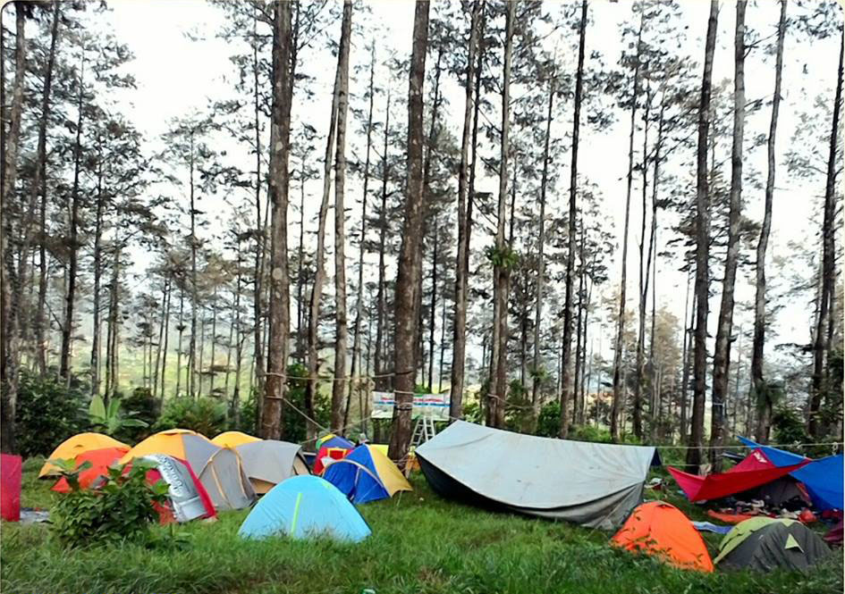
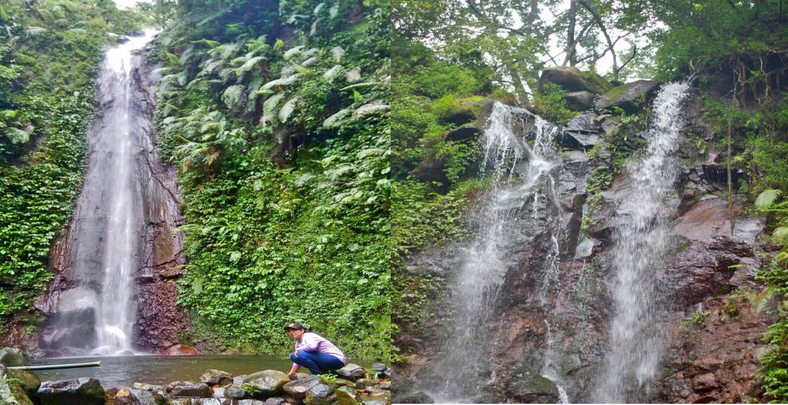
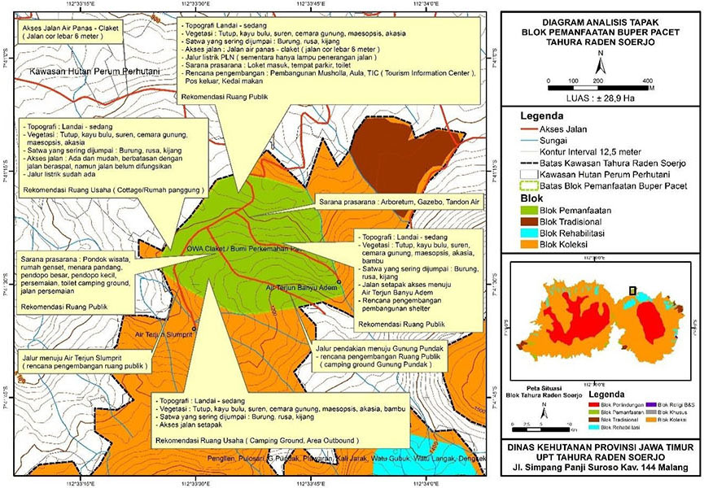

Areal blok pemanfaatan Bumi Perkemahan Pacet / OWA Claket merupakan bagian kawasan Taman Hutan Raya Raden Soerjo seluas ± 28,9 hektar berada pada 7° 41’ 15,384” – 7° 41’ 33,850” LS dan 112° 33’ 24,864” – 112° 33’ 49,309” BT, terletak di wilayah Kabupaten Mojokerto Kecamatan Pacet Desa Claket. Areal ini memiliki topografi datar, landai dan curam. Pada areal datar dan landai sangat strategis untuk pembangunan sarana dan prasarana kegiatan pariwisata alam.ratif berada di Desa Tulungrejo Kecamatan Bumiaji Kota Batu, Lokasi tersebut berada pada ketinggian 1.800 mdpl
Ada berbagai jenis flora yang berada di Bumi Perkemahan Pacet dimana pada area ini flora yang mendominasi yaitu jenis Tutup seperti (Macaranga gigantea), jenis lainnya yaitu Suren (Tona sureni), Maesopsis (Maesopsis eminii), Sengon (Albizia falcataria), Anggrung (Trema orientalis), Gmelina (Gmelina arborea), Pinus (Pinus merkusii), Kopel, Cemara Gunung (Casuarina junghuniana), Pakis aji (Cycas rumphii), Cembirit (Tabernaemontana macrocarpa) dengan tutupan lahan ± 85%.
Satwa yang sering dijumpai yaitu Kijang (Muntiacus muntjak), Rusa Timor (Cervus timorensis), Ayam hutan (Galus sp) dan Monyet ekor panjang (Macaca fascicularis).

Yang menjadikan Bumi Perkemahan Pacet menarik untuk di kunjungi dimana disekitar area ini terdapat beberapa air terjun di antaranya yaitu Air terjun Banyu Adem, Air terjun Slumprit, Bumi Perkemahan dan Arboretum dimana tempat berbagai pohon ditanam dan dikembangbiakkan untuk tujuan penelitian atau pendidikan. Akses menuju lokasi ini adalah jalan cor Air Panas – Claket dengan lebar jalan 6 meter, dapat ditempuh melalui pintu masuk barat yakni Wana wisata Air Panas Padusan yang dikelola oleh Perum Perhutani dan/atau pintu timur di desa Claket. Jarak antara kedua pintu masuk masuk ± 1,5 kilometer.

Untuk penerangan jalan pada malam hari sudah terpasang lampu penerangan di sepanjang bahu jalan antara Air panas hingga Claket. Untuk mendukung kegiatan wisata, telah dibangun beberapa sarana di Blok Pemanfaatan Claket yaitu Pintu Gerbang, Loket masuk, Toilet, Camping Ground, Menara Pandang, Gazebo dan lainnya. Pengunjung Bumi Perkemahan Pacet dimanjakan dengan keindahan bentang alam yang masih terjaga, ketersediaan air yang cukup banyak, dan udara yang terasa segar dan sejuk ketika dihirup.